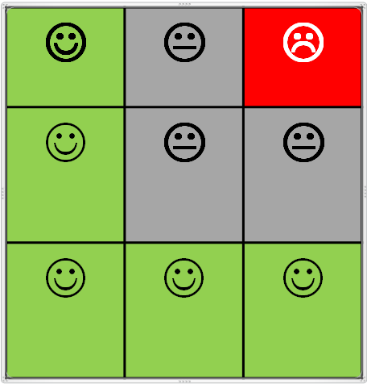

Selection of L-shaped genes using a heuristic algorithm
Introduction
This document contains examples / applications on how to select L-shaped genes from two data matrices, an expression and a methylation matrix, matched by rows (genes) and columns(samplea), using the algorithms implemented by the authors and described elsewhere.
The idea is to “keep-it-simple” so that it can serve as the basis for other applications such as a program that optimizes the parameters or for a graphical user interface based in Shiny.
Essentially what the program does is
Data input
- Select (Load) expression values from a csv file
- Select (Load) methylation values from a csv file
- Data preprocessing may need to be done automatically so that its results can be used for filtering.
Set parameter values
For data use (all genes or only those that pass certain filters (corr < 0))
For L-shape selection method: Here one may want to select the method and its parameters (each method has a different set of parameters)
Data processing (For each method and set of parameters …)
- Run the computation and “mark” L-shape genes
- Draw the scatterplots of either all genes or only selected genes
Data output (For each method and set of parameters …)
- Save (Download) the resulting gene list(s)
- Save (Download) the scatterplots
if (!(require(VennDiagram))) install.packages("VennDiagram")
if (!(require(org.Hs.eg.db)))
biocManager::install("org.Hs.eg.db")
if(!(require(Lheuristic)))
devtools::install_github("aspresearch/Lheuristic", force=TRUE)
library(Lheuristic)The data for the analysis
Real datasets
There are several datasets available for analysis obtained from distinct sources:
- DA1. Expression microarrays (
DAMicroarrays.csv) and methylation array (DAMetilacion.csv) on 25 cell llines - DA2. Expression RNAseq (
DARNAseq.csv) and methylation array (DAMetilacion.csv) on 25 cell llines - GEO1. Expression microarrays (Illumina beadchips,
geoMicroarrays.csv) and methylation array (Illumina 25kMethArray,geoMetilacion.csv) on 25 CRC samples. The data have been collected from the GEO database records: GSE25062 for the methylation data and GSE25070 for the expression data. The dataset has been created by taking the expression values available for 26 CRC tumors and matching with their corresponding methylation values. TCGAdataset has been obtained from The Cancer Genome Atlas Database (TCGA) (Colon Adenocarcinoma (COAD) Nature 2012 dataset) and downloaded through the cBioportal website.
A summary of each datasets follows below:
require(printr)
DAExprData <- as.matrix(read.table(file=file.path(dadesDir,"DatosMicroarrays.csv"), header=TRUE, sep=";", dec=",", row.names = 1))
DAMetilData <- as.matrix(read.table(file=file.path(dadesDir,"DatosMetilacion.csv"), header=TRUE, sep=";",dec=",", row.names = 1))
#DARNAseqData <- as.matrix(read.table(file=file.path(dadesDir,"DatosRNAseq.csv"), header=TRUE, sep=";",dec=",", row.names = 1))
cat("DA Microarray data : ", dim(DAExprData), "\n")DA Microarray data : 11359 30 cat("DA Methylation data: ", dim(DAMetilData), "\n")DA Methylation data: 11359 30 # cat("DA RNASeq data : ", dim(DARNAseqData), "\n")
save(DAExprData, DAMetilData, file="dades/DataMatrices-DA.Rda")geoExprData <- as.matrix(read.table(file=file.path(dadesDir,"GEOExpData.csv"), header=TRUE, sep=";", dec="."))
geoMetilData <- as.matrix(read.table(file=file.path(dadesDir,"GEOMethData.csv"), header=TRUE, sep=";", dec="."))
cat("GEO Microarray data : ", dim(geoExprData), "\n")GEO Microarray data : 11191 25 cat("GEO Methylation data: ", dim(geoMetilData), "\n")GEO Methylation data: 11191 25 save(geoExprData, geoMetilData, file="dades/DataMatrices-GEO.Rda")TCGAExprData <- as.matrix(read.table(file=file.path(dadesDir,"TCGA-cBioPortal-Expressions.csv"), header=TRUE, sep=",", dec=".", row.names=1))
TCGAMetilData <- as.matrix(read.csv(file=file.path(dadesDir,"TCGA-cBioPortal-Methylations.csv"), header=TRUE, sep=",", dec=".", row.names=1))
cat("TCGA Microarray data : ", dim(TCGAExprData), "\n")TCGA Microarray data : 11788 223 cat("TCGA Methylation data: ", dim(TCGAMetilData), "\n")TCGA Methylation data: 11788 223 save(TCGAExprData, TCGAMetilData, file="dades/DataMatrices-TCGA.Rda")inCommon<- length(intersect(rownames(DAExprData), rownames(geoExprData)))
inCommon2 <- length(intersect(rownames(DAExprData), rownames(TCGAExprData)))
inCommon3 <- length(intersect(rownames(geoExprData), rownames(TCGAExprData)))There are genes in common between the DAX dataset and the GEO datasets. There are common genes between the DAX dataset and the TCGA dataset and common genes between the GEO dataset and the TCGA dataset.
This can be visualized using a Venn diagram
myVenn4<- venn.diagram(x=list(DA=rownames(DAExprData),
GEO=rownames(geoExprData),
TCGA=rownames(TCGAExprData)),
filename=NULL, lty = "blank",
fill=c("pink1", "skyblue", "mediumorchid"),
main="Genes in common between the three datasets")
grid.newpage()
grid.draw(myVenn4)The data for these analyses must have a common structure: Each pair of matrices (Expression-Methylation) must have the same rome and column names, that is both datasets must contain information for the same genes and same samples at their corresponding positions.
This can be checked using a simple function such as checkData available in the package.
try(if(!checkPairing(DAExprData, DAMetilData)) stop("Row names and/or column names do not match"))
try(if(!checkPairing(geoExprData, geoMetilData)) stop("Row names and/or column names do not match"))When one is studying the relation between methylation and expression for a bunch of genes it may be convenient to (be able) to plot the scatterplots depicting the relation between these variables. Function plotGenesMat allows to draw such plots.
Some examples of using this function with the first four genes of the TCGA dataset are shown below.
selectedGenes <- c("ALDH1A2", "ALDH1A3", "APCDD1", "ARHGDIB")
opt<- par(mfrow=c(2,2))
plotGenesMat (mets=DAMetilData[selectedGenes, ],
expres=DAExprData[selectedGenes,], x1=1/3, x2=2/3,
percY1=1/3, percY2=2/3,
fileName=NULL, plotGrid = TRUE)
par(opt)selectedGenes <- c("ALDH1A2", "ALDH1A3", "APCDD1", "ARHGDIB")
opt<- par(mfrow=c(2,2))
plotGenesMat (mets=geoMetilData[selectedGenes,],
expres=geoExprData[selectedGenes,],
x1=1/3, x2=2/3, percY1=1/3, percY2=2/3,
fileName=NULL, plotGrid = TRUE)
par(opt)selectedGenes <- c("ALDH1A2", "ALDH1A3", "APCDD1", "ARHGDIB")
opt<- par(mfrow=c(2,2))
plotGenesMat (mets=TCGAMetilData[selectedGenes,],
expres=TCGAExprData[selectedGenes,],
x1=1/3, x2=2/3, percY1=1/3, percY2=2/3,
fileName=NULL, plotGrid = TRUE)
par(opt)
Looking at the figuresabove shows that although the genes may behave similarly between datasets methods for selecting GRM must be robust and adaptable to for eample distinct sample sizes.
Gene ZBTB18
Figure ?@sec-plotZBTB18 shows how the scatterplot looks like for a gene that has been described bu the researchers as regulated by methylation
#selectedGenes <- c("A1BG","A2ML1", "A4GALT", "AAAS" )
selectedGene <- c("ZBTB18", "ZBTB18")
opt<- par(mfrow=c(2,2))
plotGenesMat (mets=DAMetilData[selectedGene, ],
expres=DAExprData[selectedGene,], x1=1/3, x2=2/3,
percY1=1/3, percY2=2/3,
fileName=NULL, plotGrid = TRUE)
abline( lm(DAExprData["ZBTB18",]~ DAMetilData["ZBTB18", ]))
plotGenesMat (mets=DAMetilData[selectedGene, ],
expres=DAExprData[selectedGene,], x1=1/3, x2=2/3,
percY1=1/2, percY2=3/4,
fileName=NULL, plotGrid = TRUE)
abline( lm(DAExprData["ZBTB18",]~ DAMetilData["ZBTB18", ]))
par(opt)Artificial TRUE and FALSE L-shaped genes
Genes extracted from DA dataset
Two small sets of genes1 have been compiled with genes that were clearly L-shaped or clearly non-L-Shaped. Because these sets have been prepared arbitrarily we decide not to use them as “TRUE POSITIVE” and “TRUE NEGATIVES” except for illustrative purposes.
1 TRUE and FALSE genes from the original dataset ” DA” have been obtained by doing an extensive sampling on the original dataset and selecting genes that seemed to have an L-shape and those that did not
## Genes True i False
trueLGeneDF <-read.table(file.path(dadesDir, "genesTrueLNEW.txt"))
(trueLGeneNames <- as.character(trueLGeneDF[,1])) [1] "ABCG2" "ADH6" "AKR1C4" "BCL11B" "CA9"
[6] "CCR6" "CST7" "CX3CL1" "DAPP1" "CYP27A1"
[11] "ELAVL2" "FAM84A" "GREM1" "HSD17B2" "INHBB"
[16] "KCNV1" "LHFP" "MEP1A" "LRP2" "MAGEE1"
[21] "MEP1A" "MYT1" "NOX1" "OAS2" "PHYHIPL"
[26] "POF1B" "POPDC3" "PRDM16" "PRDM5" "QPCT"
[31] "RASGRF2" "RAB6B" "RASEF" "RNF186" "SOX2"
[36] "SOSTDC1" "SPON1" "ST6GALNAC1" "STEAP4" "STK33"
[41] "TAPBPL" "SYN2" "THRB" "TRAM1L1" "WNK4" falseLGeneDF <- read.table(file.path(dadesDir, "genesFalseLNEW.txt"))
(falseLGeneNames <- as.character(falseLGeneDF[,1])) [1] "ACOX2" "ADA" "AKR1B1" "ALDH1A3" "AMT" "ANXA3"
[7] "ARHGAP4" "ARL14" "ATP6AP2" "AUTS2" "BHLHB9" "BMP7"
[13] "C19orf33" "C1QTNF6" "CAB39L" "CDH17" "CDX1" "CFTR"
[19] "CIDEB" "CMTM3" "DNAJA4" "DUSP9" "ELF3" "ELMO3"
[25] "FBP1" "FGD4" "FKBP10" "FOXC1" "FUCA2" "GNG4"
[31] "GPRC5A" "GRAMD3" "H1F0" "HIST1H2BH" "HNMT" "HOOK1"
[37] "HOOK3" "HOXB3" "HOXB2" "HOXB5" "HS3ST1" "LCMT2"
[43] "LAMA3" "LDHB" trueLExpr <- DAExprData[rownames(DAExprData) %in% trueLGeneNames ,]
falseLExpr <- DAExprData[rownames(DAExprData) %in% falseLGeneNames ,]
trueLMet <- DAMetilData[rownames(DAMetilData) %in% trueLGeneNames ,]
falseLMet <- DAMetilData[rownames(DAMetilData) %in% falseLGeneNames ,]
if(!(file.exists("DATrueLExpression.csv")))
write.table(trueLExpr, file.path(dadesDir, "DATrueLExpression.csv"),
sep=";", dec=".", quote=FALSE)
if(!(file.exists("DATrueLMetilacion.csv")))
write.table(trueLMet, file.path(dadesDir, "DATrueLMetilacion.csv"),
sep=";", dec=".", quote=FALSE)
# tt<- read.table(file.path(dadesDir, "DATrueLMetilacion.csv"), sep=";", dec=".")Figures ?@sec-Lshaped1 and ?@sec-Lshaped2 show the first four genes of each type for illustrative purposes.
opt<- par(mfrow=c(2,2))
opt<- par(mfrow=c(2,2))
plotGenesMat (mets=falseLMet[1:4,], expres=falseLExpr[1:4,],
x1=1/3, x2=2/3, percY1=1/3, percY2=2/3,
fileName=NULL, plotGrid = TRUE)
par(opt)GEO’s TRUE and FALSE L-shaped genes list
Similarly to what we have done with the researcher’s dataset we have visually selected a set of L-shaped genes Two small sets of genes have been compiled with genes that were clearly L-shaped or clearly non-L-Shaped. Because these sets have been prepared arbitrarily we decide not to use them as “TRUE POSITIVE” and “TRUE NEGATIVES” except for illustrative purposes.
## Genes True i False
GEOTrueFalse <- read.table(file.path(dadesDir, "GEOTrueFalse.txt"))
(GEOtrueLGeneNames <- as.character(GEOTrueFalse[GEOTrueFalse[,2]!=0,1])) [1] "Gene" "LRRTM1" "P8" "B4GALT6" "C1QL1" "CNR1"
[7] "DMBT1" "ELOVL6" "EOMES" "ERG" "GSTM3" "IL17RC"
[13] "LPHN2" "MME" "MMP19" "MOSPD2" "MSX2" "MTCP1"
[19] "MTMR8" "NCOR2" "P4HA3" "SH3GL2" "SMARCA1" "SMO"
[25] "TITF1" "TLR7" "TP53INP1" "TRPM8" "UBL4A" "ZNF550"
[31] "ZNF71" (GEOfalseLGeneNames <- as.character(GEOTrueFalse[GEOTrueFalse[,2]==0,1])) [1] "KLHL20" "PPM2C" "SNX27" "C6orf114" "IMMP2L" "NOL3"
[7] "P15RS" "PCGF2" "NCOA2" "PQLC2" "SLC20A1" "AQP9"
[13] "KIT" "AP4B1" "FOXO1A" "C1orf102" "NSD1" "ANKRD23"
[19] "MCL1" "SPATA21" "C6orf72" "ATP2A1" "EGLN1" "TFAP2E"
[25] "TMC6" "KRTHA4" "CHST8" "SKI" "MCART1" "MYBPC3"
[31] "ZNF542" "ICT1" "RALBP1" "SPINK5" "IL10RB" "BTBD10"
[37] "TMTC3" "WNT3" "C1orf142" "MX2" "DDX19A" "BXDC5"
[43] "SIX6" "COG1" "ALPPL2" "TNFRSF4" "FLJ45983" "IFT80"
[49] "LOC388407" "TIGD1" "NKX6-2" "PARD3" "SYT3" "FOXB1"
[55] "FLJ90166" "EMR2" "ABCB10" "NDUFA4" "TLOC1" "SLC14A1"
[61] "DDX3X" "TACC2" "PLEKHA8" "SP6" "EPB41L1" "ASB6"
[67] "LY6G6C" "LRP6" "GPR30" "GPR1" GEOtrueLExpr <- geoExprData[rownames(geoExprData) %in% GEOtrueLGeneNames ,]
GEOfalseLExpr <- geoExprData[rownames(geoExprData) %in% GEOfalseLGeneNames ,]
GEOtrueLMet <- geoMetilData[rownames(geoMetilData) %in% GEOtrueLGeneNames ,]
GEOfalseLMet <- geoMetilData[rownames(geoMetilData) %in% GEOfalseLGeneNames ,]
GEOTrueFalseExpr <- geoExprData[rownames(geoExprData) %in% c(GEOtrueLGeneNames,GEOfalseLGeneNames) ,]
GEOTrueFalseMet <- geoMetilData[rownames(geoMetilData) %in% c(GEOtrueLGeneNames,GEOfalseLGeneNames) ,]
if(!(file.exists("GEOTrueLExpression.csv")))
write.table(GEOtrueLExpr, file.path(dadesDir, "GEOTrueLExpression.csv"),
sep=";", dec=".", quote=FALSE)
if(!(file.exists("GEOTrueLMetilacion.csv")))
write.table(GEOtrueLMet, file.path(dadesDir, "GEOTrueLMetilacion.csv"),
sep=";", dec=".", quote=FALSE)
# tt<- read.table(file.path(dadesDir, "GEOTrueLMetilacion.csv"), sep=";", dec="."); head(tt)Figures ?@sec-GEOLshaped1 and ?@sec-GEOLshaped2 show the first four genes of each type for illustrative purposes.
opt<- par(mfrow=c(2,2))
plotGenesMat (mets=GEOtrueLMet[1:4,], expres=GEOtrueLExpr[1:4,],
fileName=NULL, plotGrid = TRUE)
par(opt)opt<- par(mfrow=c(2,2))
plotGenesMat (mets=GEOfalseLMet[1:4,], expres=GEOfalseLExpr[1:4,],
x1=1/3, x2=2/3, y1=y1, y2=y2,
fileName=NULL, plotGrid = TRUE)
par(opt)Scoring scatterplots
The “three band rule”
After trying different approaches to detect L-shapes, one often comes back to a naive approach like “L-shaped” genes should show an L shape in the scatterplot, that is, values should tend to be scattered near the vertical and horizontal axes, and the more we move from these positions the least L-shaped the gene should be.
This idea can be made more explicit by introducing a “three-band rule” as follows:
Overimpose a \(3\times 3\) grid on the scatterplot.
Classify the scatterplot as “L” or “non-L” based on a small set of conditions:
i) There must be a _minimum_ number of points in the upper-left (cell (1,1)) and lower right (cell (3,3)) corners of the grid. i) There must be a _maximum_ number of points in the upper right (cell (1,3)) because points there mean hypermethylation and hyperexpression which is the opposite of what we are looking for. i) We will usually _not require to have a minimum of points in cell (3,1)_ unless we are really willing to have an L-shape (in our setting we will also be happy tho recover diagonals, which also reflect a negative correlation!).Score points on each subgrid in such a way that
i) Points in permitted regions (left-outer margin, i.e. cells: (1,1), (2,2), (3,1), (3,2), (3,3)) score positively if the scatterplot has been classified as L or zero if it has been classified as non-L. i) Points in non-desired regions (outer band. i.e. cells (1,2), (1,3), (2,3)) score negatively in all cases. i) Some regions may be declared neutral and not-score, such as cell (2,2).Use cross-validation to tune scoring parameters (if a set of positive and negative L-shaped genes is available).
The previous scheme can be summarized using the following equation. \[ S(X) = W_L \circ X \times \mathbbm{1}_L(X) + W_{L^C} \circ X \times \mathbbm{1}_{L^c}(X), \] where
- \({X}\) is the matrix of counts, i.e. the number of counts in each cell of the grid,
- \({W_L}\) is the matrix of scores per cell and point if the scatterplot has been classified as \(L\),
- \({W_{L^c}}\) is the matrix of scores per cell and point if the scatterplot has been classified as non-\(L\) (\(L^c\)),
and \(\circ\) represents the hadamard product of the two matrices \(W_{L/L^c}\) (i.e. elementwise multiplication of the two matrices) and \(\mathbbm{1}_{L/L^c}()\) is the indicator function for \(L\) or \(L^c\).
The fact that the scatterplot is assigned to \(L\) or \(L^c\) can also be described as the hadamard product of three matrices: \[ \mathbold{1}_L(X) = \bigwedge_{i,j} X \circ C \circ \left( mMP \times \sum_{i,j}x_{ij}\right), \] where:
- \({X}\) is the matrix of counts, i.e. the number of counts in each cell of the grid,
- \(C\) is the matrix of conditions to be verified if the scatterplot has to be classified as \(L\),
- \(mMP\) is the matrix of minimum and Maximum Percentages of points to have in each cell if the scatterplot has to be classified as \(L\),
- \(\circ\) represents the pointwise logical operation which allows that the product of the three cells becomes a logical operation and
- \(\bigwedge_{i,j}\) represents an logical “AND” operation of all cells, that is if all cells are TRUE the result is assigned to \(L\) and if one fails it is assigned to \(L^c\).
This idea is summarized in figure ?@sec-Lscore
knitr::include_graphics("images/Lscoring.png")
Computing on a grid
We have developed several functions to help detect and select L–shape scatterplots. Their use is described in the package help but they are illustrated here to clarify the code below.
calcFreqscounts the number of points in each cell of the grid for given vertical (defined by parametersx1,x2) and horizontal lines (defined by parametersy1,y2,percY1,percY2)binScoreclassifies (scores binarily) a scatterplot based on the rules described above, that is it checks if the minimal assumptions for an L-shape hold or not. It needs a matrix of min-max frequency counts.numScorescores a scatterplot using a matrix of weights that defines the score given to each point depending on the cell where it is located.- If the scatterplot has been classified as having L-shape all points are scored, those in favorable regions score positively and those in non-favorable regions negatively.
- If the scatterplot has not been classifed as “L” only points in non-favourable regions score negatively.
scoreGenesMatis a wrapper for scoring the genes provided in two related matrices that is, it first applies thebinScorefunction and depending on its results it computes thenumericScorefunction with all the genes in the (pair of) matrices.- Function
plotGenesMatis not a computing function but it is worth to enumerate it here because it complements the other functions by allowing to visualize the data that have generated a certain score from a given scatterplot.
Examples
Scoring the TRUE/FALSE DA dataset
The first example below show that genes that have been marked as TRUE or FALSE L in the DA dataset may score different.
xVecTrue<- as.numeric(trueLMet[1,])
yVecTrue<- as.numeric(trueLExpr[1,])
reqPercentages <- matrix (c(10, 20, 0, 5, 0, 20, 0, 5, 5), nrow=3, byrow=TRUE)
messageTitle("Frequency count in first 'TRUE' gene")
(geneGridTrue <- calcFreqs(xMet=xVecTrue, yExp=yVecTrue, x1=1/3, x2=2/3,
y1=NULL, y2=NULL, percY1=1/3, percY2=2/3))| 4 | 0 | 0 |
| 11 | 0 | 0 |
| 10 | 3 | 2 |
(maxminCountsT <- toReqMat (sum(geneGridTrue), reqPercentages))| 3 | 6 | 0 |
| 2 | 0 | 6 |
| 0 | 2 | 2 |
(aWeightMifL=matrix (c(2,-2,-25,1,0,-2,1,1,2), nrow=3, byrow=TRUE))| 2 | -2 | -25 |
| 1 | 0 | -2 |
| 1 | 1 | 2 |
(aWeightMifNonL=matrix (c(0,-2,-25,0,0,-2,0,0,0), nrow=3, byrow=TRUE))| 0 | -2 | -25 |
| 0 | 0 | -2 |
| 0 | 0 | 0 |
messageTitle("Binary and numeric soring in first 'TRUE' gene")
(binSc<- binScore (geneGridTrue, maxminCountsT ))[1] TRUE(nsT<- numScore(geneGridTrue, LShaped = binSc, aWeightMifL, aWeightMifNonL))[1] 36xVecFalse<- as.numeric(falseLMet[1,])
yVecFalse<- as.numeric(falseLExpr[1,])
messageTitle("Frequency count in first 'FALSE' gene")
(geneGridFalse <- calcFreqs(xMet=xVecFalse, yExp=yVecFalse, x1=1/3, x2=2/3,
y1=NULL, y2=NULL, percY1=1/3, percY2=2/3))| 1 | 1 | 2 |
| 2 | 0 | 3 |
| 3 | 3 | 15 |
(maxminCountsF <- toReqMat (sum(geneGridFalse), reqPercentages))| 3 | 6 | 0 |
| 2 | 0 | 6 |
| 0 | 2 | 2 |
# Same value as maxminCountsT because it depends only on required percentages and sample size
messageTitle("Binary and numeric soring in first 'FALSE' gene")
(binSc<-binScore (geneGridFalse, maxminCountsF))[1] FALSE(nsF<- numScore(geneGridFalse, LShaped = binSc, aWeightMifL, aWeightMifNonL))[1] -58| 2 | -2 | -30 |
| 1 | 0 | -2 |
| 1 | 1 | 2 |
| 0 | -2 | -30 |
| 0 | 0 | -2 |
| 0 | 0 | 0 |
| 10 | 20 | 0 |
| 10 | 0 | 20 |
| 20 | 10 | 10 |
Number of scatterplots scored : 44 Number of L-shape scatterplots : 9 | FALSE | TRUE |
|---|---|
| 35 | 9 |
| -30 | -10 | -8 | -4 | -2 | 0 | 34 | 36 | 37 | 41 | 43 | 45 |
|---|---|---|---|---|---|---|---|---|---|---|---|
| 3 | 1 | 1 | 2 | 5 | 23 | 1 | 1 | 1 | 3 | 2 | 1 |
Number of scatterplots scored : 44 Number of L-shape scatterplots : 0 | FALSE |
|---|
| 44 |
| -256 | -206 | -168 | -148 | -112 | -110 | -108 | -96 | -92 | -76 | -72 | -68 | -66 | -46 | -42 | -40 | -36 | -34 | -32 | -18 | -16 | -12 | -10 | -8 | -6 | -4 | -2 | 0 |
|---|---|---|---|---|---|---|---|---|---|---|---|---|---|---|---|---|---|---|---|---|---|---|---|---|---|---|---|
| 1 | 2 | 1 | 1 | 1 | 1 | 1 | 1 | 1 | 1 | 2 | 2 | 1 | 2 | 1 | 1 | 1 | 2 | 2 | 1 | 1 | 3 | 2 | 1 | 1 | 2 | 2 | 6 |
Putting all together: Selecting L-shaped genes
The goal of developing all these functions is being able to select L-shaped genes from a paired dataset (expression-methylation) in a way that is as flexible and as rapid and as good as possible.
Essentially the process of selecting L-shape genes consists of three steps:
- Select datasets (a pair of row-column matched matrices, one for expression and one for methylation).
- Set parameters:
- Grid definition
- Binary Scoring ilii) Numerical Scoring
- Score the selected data and return classificaation (scores and group) and plots for each gene.
Parameters selection
As it has been shown in the examples above the functions may be applied sequentially to an expression-methylation pair using the scoreGenesMat function.
We have selected a different set of parameters for DA and GEO datasets than for TCGA data, because as the sample size increases it seems reasonable (necessary) to be mor permisive. Strictly speaking only required percentages have been changed, not weights.
Parameters for DA and GEO datasets (small samples)
(reqPercentages <- matrix (c(10, 20, 1, 4, 30, 20, 0, 5, 10), nrow=3, byrow=TRUE))| 10 | 20 | 1 |
| 4 | 30 | 20 |
| 0 | 5 | 10 |
(maxminCounts <- toReqMat(dim(DAMetilData)[2], reqPercentages)) # Informative. NOt used in calculations because it is computed within the loop| 3 | 6 | 0 |
| 1 | 9 | 6 |
| 0 | 2 | 3 |
(theWeightMifL=matrix (c(2,-2,-25,1,0,-2,1,1,2), nrow=3, byrow=TRUE))| 2 | -2 | -25 |
| 1 | 0 | -2 |
| 1 | 1 | 2 |
(theWeightMifNonL=matrix (c(0,-2,-25,0,0,-2,0,0,0), nrow=3, byrow=TRUE))| 0 | -2 | -25 |
| 0 | 0 | -2 |
| 0 | 0 | 0 |
Parameters for TCGA datasets (big samples)
(reqPercentages4TCGA <- matrix (c(4, 20, 5, 1, 40, 20, 0, 1, 4), nrow=3, byrow=TRUE))| 4 | 20 | 5 |
| 1 | 40 | 20 |
| 0 | 1 | 4 |
(maxminCounts4TCGA <- toReqMat(dim(TCGAMetilData)[2], reqPercentages4TCGA))| 9 | 45 | 11 |
| 2 | 89 | 45 |
| 0 | 2 | 9 |
(theWeightMifL=matrix (c(2,-2,-25,1,0,-2,1,1,2), nrow=3, byrow=TRUE))| 2 | -2 | -25 |
| 1 | 0 | -2 |
| 1 | 1 | 2 |
(theWeightMifNonL=matrix (c(0,-2,-25,0,0,-2,0,0,0), nrow=3, byrow=TRUE))| 0 | -2 | -25 |
| 0 | 0 | -2 |
| 0 | 0 | 0 |
Scoring datasets
Once the parameters have been set we can proceed to score and classify each dataset.
sampleSize <- dim(DAMetilData)[2]
numGenes <- dim(DAMetilData)[1]
messageTitle("Scoring ALL genes in the DA (microarrays) dataset")
scoresDA1 <- scoreGenesMat (mets=DAMetilData[1:numGenes,],
expres=DAExprData[1:numGenes,],
aReqPercentsMat=reqPercentages,
aWeightMifL=theWeightMifL,
aWeightMifNonL=theWeightMifNonL )
cat("Number of scatterplots scored : ", dim(scoresDA1)[1],"\n")Number of scatterplots scored : 11359 cat("Number of L-shape scatterplots : ", sum(scoresDA1[,1]),"\n")Number of L-shape scatterplots : 214 head(scoresDA1)| logicSc | numericSc | |
|---|---|---|
| A1BG | FALSE | -78 |
| A2M | FALSE | -20 |
| A2ML1 | FALSE | 0 |
| A4GALT | TRUE | 21 |
| A4GNT | FALSE | -91 |
| AAAS | FALSE | 0 |
table(scoresDA1[,1])| FALSE | TRUE |
|---|---|
| 11145 | 214 |
messageTitle("Scoring ALL genes in the GEO dataset")
sampleSize <- dim(geoMetilData)[2]
numGenes <- dim(geoMetilData)[1]
scoresGEO <- scoreGenesMat (mets=geoMetilData[1:numGenes,],
expres=geoExprData[1:numGenes,],
aReqPercentsMat=reqPercentages,
aWeightMifL=theWeightMifL,
aWeightMifNonL=theWeightMifNonL )
cat("Number of scatterplots scored : ", dim(scoresGEO)[1], "\n")Number of scatterplots scored : 11191 cat("Number of L-shape scatterplots : ", sum(scoresGEO[,1]), "\n")Number of L-shape scatterplots : 39 table(scoresGEO[,1])| FALSE | TRUE |
|---|---|
| 11152 | 39 |
(sampleSize <- dim(TCGAMetilData)[2])[1] 223(numGenes <- dim(TCGAMetilData)[1])[1] 11788theGenes <- 1:numGenes
reqPercentages <- matrix (c(5, 20, 5, 5, 30, 20, 0, 5, 10), nrow=3, byrow=TRUE)
(maxminCounts <- toReqMat(sampleSize, reqPercentages))| 11 | 45 | 11 |
| 11 | 67 | 45 |
| 0 | 11 | 22 |
(theWeightMifL=matrix (c(2,-2,-sampleSize/5,1,0,-2,1,1,2), nrow=3, byrow=TRUE))| 2 | -2 | -44.6 |
| 1 | 0 | -2.0 |
| 1 | 1 | 2.0 |
(theWeightMifNonL=matrix (c(0,-2,-sampleSize/5,0,0,-2,0,0,0), nrow=3, byrow=TRUE))| 0 | -2 | -44.6 |
| 0 | 0 | -2.0 |
| 0 | 0 | 0.0 |
messageTitle("Scoring ALL genes in the TCGA (microarrays) dataset")
# theGenes <- c("ALDH1A2", "ALDH1A3", "APCDD1", "ARHGDIB", "ARHGDIG", "APC")
scoresTCGA <- scoreGenesMat (mets=TCGAMetilData[theGenes,],
expres=TCGAExprData[theGenes,],
x1=1/3, x2=2/3,
aReqPercentsMat=reqPercentages,
aWeightMifL=theWeightMifL,
aWeightMifNonL=theWeightMifNonL )
cat("Number of scatterplots scored : ", dim(scoresTCGA)[1],"\n")Number of scatterplots scored : 11788 cat("Number of L-shape scatterplots : ", sum(scoresTCGA[,1]),"\n")Number of L-shape scatterplots : 50 head(scoresTCGA)| logicSc | numericSc | |
|---|---|---|
| A1BG | FALSE | -1224.6 |
| A2M | FALSE | -182.6 |
| A2ML1 | FALSE | -36.0 |
| A4GALT | FALSE | -102.6 |
| A4GNT | FALSE | -274.4 |
| AAAS | FALSE | 0.0 |
table(scoresTCGA[,1])| FALSE | TRUE |
|---|---|
| 11738 | 50 |
We may use the scores obtained to sort genes from most" toleast” L-shaped.
orderDA1<- order(scoresDA1[,1], scoresDA1[,2], rownames(scoresDA1),
method="radix", decreasing=c(TRUE, TRUE, FALSE))
orderGEO<- order(scoresGEO[,1], scoresGEO[,2], rownames(scoresGEO),
method="radix", decreasing=c(TRUE, TRUE, FALSE))
orderTCGA<- order(scoresTCGA[,1], scoresTCGA[,2], rownames(scoresTCGA),
method="radix", decreasing=c(TRUE, TRUE, FALSE))We can now use this ordering to plot all genes starting by those that we consider L-shaped. The resulting plots are available in files
DAExprAllScores.pdfGEOLGenesScores.pdfTCGAGenesScores.pdf
plotGenesMat (mets=DAMetilData[orderDA1,],
expres=DAExprData[orderDA1,],
fileName ="DAExprAllScores.pdf",
text4Title = scoresDA1[orderDA1,"numericSc"])png
2 plotGenesMat (mets=geoMetilData[orderGEO,],
expres=geoExprData[orderGEO,],
fileName ="GEOLGenesScores.pdf",
text4Title = scoresGEO[orderGEO,"numericSc"])png
2 plotGenesMat (mets=TCGAMetilData[orderTCGA,],
expres=TCGAExprData[orderTCGA,],
fileName ="TCGALGenesScores.pdf",
text4Title = scoresTCGA[orderTCGA,"numericSc"])png
2 Alternatively instead of plotting all genes we may select L genes and plot only these. The resulting plots are avilable in files
DAExprLGenesScores.pdfDARNAseqLGenesScores.pdf
LgenesDAExpr <- DAExprData[scoresDA1[,"logicSc"],]
dim(LgenesDAExpr)[1] 214 30geneListLDAExpr <- rownames(DAExprData[scoresDA1[,"logicSc"],])
plotGenesMat (mets=DAMetilData[geneListLDAExpr,],
expres=DAExprData[geneListLDAExpr,],
fileName ="DAExprLGenesScores.pdf",
text4Title = scoresDA1[geneListLDAExpr,"numericSc"])png
2 LgenesGEOExpr <- geoExprData[scoresGEO[,"logicSc"],]
dim(LgenesGEOExpr)[1] 39 25geneListLGEOExpr <- rownames(geoExprData[scoresGEO[,"logicSc"],])
plotGenesMat (mets=geoMetilData[geneListLGEOExpr,],
expres=geoExprData[geneListLGEOExpr,],
fileName ="geoExprLGenesScores.pdf",
text4Title = scoresGEO[geneListLGEOExpr,"numericSc"])png
2 LgenesTCGA <- TCGAExprData[scoresTCGA[,"logicSc"],]
dim(LgenesTCGA)[1] 50 223geneListLTCGA <- rownames(TCGAExprData[scoresTCGA[,"logicSc"],])
plotGenesMat (mets=TCGAMetilData[geneListLTCGA,],
expres=TCGAExprData[geneListLTCGA,],
fileName ="TCGALGenesScores.pdf",
text4Title = scoresTCGA[geneListLTCGA,"numericSc"])png
2 save(geneListLDAExpr, geneListLGEOExpr, geneListLTCGA,
file=file.path(resultsDir, "geneListsL1.RData"))
myVenn4<- venn.diagram(x=list(DAMicroarrays=geneListLDAExpr,
GEOData=geneListLGEOExpr,
TCGAData=geneListLTCGA),
filename=NULL, lty = "blank",
fill=c("skyblue", "red", "yellow"))
grid.draw(myVenn4)Or it can be applied to a pre-filtered subset, such as genes showing a significantly negative correlation.